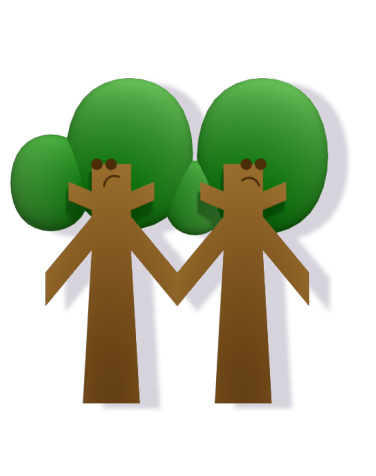
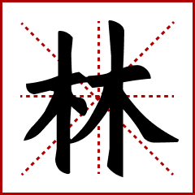

Great Job! You created...


GROVE
'林' represents a grove. It beautifully illustrates the concept of duplication in Chinese characters: '林' is composed of two '木' (wood) characters side by side, symbolizing a collection of trees. '林' not only conveys the idea of a forest but also forms part of other words and expressions related to nature and environments, such as '森林' (dense forest, combining '森' and '林'). Writing '林' is an exercise in symmetry and balance, reflecting the harmony found in nature. Each stroke is a part of the greater whole, just like each tree in a forest.